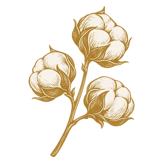

FLOWERS TO SHARE
作品分享
Flower Gallery瀏覽大家的花藝作品，也歡迎分享你的創作。
Explore floral creations and share your own.

來分享今天插的花。How to share
- 01
完成作品
在工作室完成創作，下載作品圖片。
- 02
留下名字
上傳圖片，填寫創作者名字，Instagram 可選填。
- 03
等待確認
由 FORi Flower 確認後，連同你的名字一起分享。
Hana 筆記本 By Hana
左右滑動翻閱
Flowers by Hana
作品即將展出。
FORi · COMMUNITY EXHIBITION
作品展示
大家的分享 Community
依花器瀏覽
歡迎分享你的創作，經 FORi Flower 確認後就會出現在這裡。